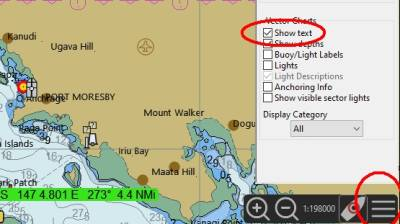
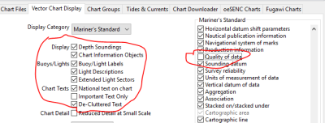
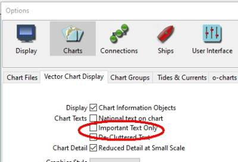
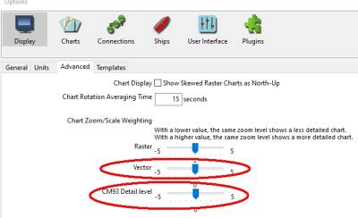

Chart Questions
ChartDownloader is missing
If you are using WindowsXP, it will not appear because WinXP does not support the encryption requiired. Sorry.
OpenCPN 5.2 Dual Chart View not working properly.
(C:\ProgramData\opencpn\)opencpn.ini:
[Canvas]
CanvasConfig=0
-
Close O. Set the CanvasConfig like above. Save the change. * Try:
-
Start OCPN - Close it again so it makes a "clean" shut down.
-
Start again - select dual canvas ("double screen") and close.
-
Start again - select single canvas - close.
-
The above a test to "clean up" the -ini file for the new version.
-
If no success - rename/delete the ini file for a clean first time start up as of your own suggestion. (And, yes, that’s a good training to reset all O settings. )
-
Very Choppy Chart panning after "Navigate to Here"
Disable Options > Connections > "Output this port (as autopilot or NMEA repeater)", particularly if it is doing nothing. Once I unchecked the issue goes away.
Charts jump while Using Follow Ship Offset, Look Ahead & North up Modes
Chart Rotation Smoothing. When follow ship, offset mode, look ahead mode and north up mode are all turned on, the goal of the look ahead is to position the ship about 2/3 away from the farthest point directly ahead of the ship. Because the screen is a rectangle, the ship’s position on the screen keeps changing, since the farthest point ahead is changing rapidly. Use Options > Display > Advanced Chart Rotation Averaging Time [new title] or Course-up Update Period Time _[old title] to smooth the chart rotation. It is actually another "always on" COG filter that smooths VP rotation and makes the chart much less jumpy. In conjunction with NMEA course and speed filtering the chart moves slowly in a nice way. Chart rotation averaging time" set to at least 15 sec.
-
Under Options > Display > Advanced see Chart Rotation Averaging Time
-
and for more about Display Orientation -Look Ahead and Course up
Where are the Chart Buttons "Piano Keys" at the bottom of the OCPN screen?
If the screen view is not in a place where charts are located then it will not show any chart keys. Try zooming out until piano keys show up.
Too many Chart Keys "Piano Keys"?
Check your Options→Display→Advanced→"Chart Zoom/Scale weighting" For most vector chart the level would be "0". If for example "5" the chart bar will be crowded and poor performance.
Chart Keys - Why and When
-
Only the charts belonging to the chart "family" viewed at the moment are highlighted.
-
You’ve three families; CM93 yellow, ENC green and rasters blue.
-
I you show CM93 charts neither of the other two will highlight.
-
If you show a raster chart only other rasters will highlight on mouse over.
-
The same goes for highlight of ENC cells.
-
Consequently will a ENC not quilt with a raster chart at the same time, or vice versa.
-
But as a kind of inconsistency will a raster quilt with CM93 if no rasters are available beside another raster chart. Very handy!
-
To swap chart family to be shown you have to click a chart bar belonging to desired chart family.
Why are chart sections missing from the display?
If you are actually asking why you don’t see the chart cell adjacent to the one being displayed as well, it is because you have disabled quilting and are in single chart mode, to switch back, press "q" or use the hamburger icon in the lower right corner to invoke the chart canvas options menu and turn quilting back on.
Charts used to show, but using 3.0.2 and later, they no longer work.
-
OpenCPN used to display charts with an unknown projection as a Mercator chart. The same thing applies to an "UNKNOWN" or not recognized geodetic datum, where OpenCPN used to default to WGS84.
-
This is no longer the case. If OpenCPN don’t recognize the chart projection, it will not be displayed.
* Potentially serious errors are thus avoided.
* The event is logged in the opencpn.log.
* Users may run into problems if a chart projection is stated as "UNKNOWN" even though it really is a prefect Mercator chart.
- Unfortunately, some conversion tools take a shortcut and don't enter the "PR" tag in the kap-chart-header correctly.
* The projection of a chart can always be found, and the "PR=UNKNOWN" should always be avoided.
Official charts that OpenCPN really can’t display, with a latitude < 70 degrees north/south, are very few indeed. Really only a handful of legacy, Gnomonic, large scale charts. Charts with "UNKNOWN" or blank geodetic datum are best avoided, they may be dangerously inaccurate.
My charts "Senc" files are growing bigger and bigger (1.5gb). What can I do?
Anything in the SENC directory may be deleted while OpenCPN is stopped. The required files will be recreated as needed.
KAP files can be zoomed in but zoom out (with scroll wheel or the +/- buttons) and the chart reverts to the CM93 background
Turn quilting off (keyboard "q") and you can zoom in or out as much as you like on a kap. I have a lot of overlapping charts including vector types and this is what I do, or as cagney says, the chart will change per zoom..the which is fine unless you want to stay on a particular chart. Another way would be to set up "Chart groups"…
What are those black regions associated with ENC CM93 shipping lanes near Gibraltar?
-
The black regions never seem to go away, but change the Vector Chert Setting, "Boundaries" from "Symbolized" to "Plain" and the problem is resolved. These may be hatched/plain areas when changing the settings, or perhaps some national water delimitation is drawn plain or fine-dashed (Gibraltar).
Why do vector charts take so long to load?
-
The behavior you see is expected for ENC charts. ENCs must be converted to internal SENC format before use for navigation. This takes a little bit of time, depending on your system capabilities. But it only has to be done once, and the converted SENCs are stored on your system for later use. - All ECS systems must convert ENCs to SENCs. Some take longer, (like OpenCPN), so that subsequent access is faster. Some convert faster, leaving more work to do at the time of actual chart display. Its a design decision. OpenCPN is optimized for speed in real use, not for speed in conversion.
Why don’t charts show at all zoom levels while quilting is enabled?
-
If I turn off quilting, I can select the individual maps just fine and zoom to any level on them. No amount of clicking/hiding the maps using the map bar at the bottom of the screen show the maps. Only a zoom allows them to be seen. This problem of disappearing maps happens all over the country at different zoom levels. - Answer: OpenGL is turned off. Without OpenGL, OpenCPN will not quilt Mercator and Transverse Mercator charts together. Try enabling OpenGL with Options (wrench tool icon)> Display> Advanced. Click on the box between "Graphics" and "Use Accelerated Graphics (OpenGL)" to put a checkmark in the box. - When OpenGL is enabled, OpenCPN will quilt Mercator and Transverse Mercator charts (and some other projections). - If "Texture Compression with Caching" is enabled under "OpenGL Options" there will be a delay before each chart is displayed for the first time. Subsequent display of the charts in the cache will be faster.
Whenever a specific chart is opened, OpenCPN crashes. What’s going on?
-
Chances are the chart file is corrupted. * Note the name and number of the suspect chart and replace it with a fresh download. * Read the log file that may contain relevant information regarding the chart. * Sometimes the bad chart blocks OpenCPN from restarting. * Follow these instructions instead Troubleshoot Installation
On the water areas, there are triangles shown with a varying number of stars inside them. What does this represent and is it possible to avoid the triangles being shown?
Most users just want to get rid of the triangles, but please refer to the Quality of Data Documentation. - In Options > Charts > Vector Charts Tab when using Display Category "All", Uncheck "Chart Information Objects" which hides the "U" symbols . - In Options > Charts > Vector Charts Tab for a finer grain control when using Display Category "Users Standard", In the selection List Box, Uncheck "Quality of Data" which hides the "U" symbols. - If Quality of Data is checked, then the Shortcut Key "U" should toggle the "U" symbols on and off. See Keyboard Shortcut Also, when viewing ENC charts: - "U’s" show up all over the charts - Text detail seems to be missing ..like buoy identification ..Bridge names and clearances etc… - Depth sounding seem to disappear zooming in and out.
Why is "Users Standard" greyed out?
Options > charts > Vector chart display tab, the 'user standard objects' section on the right side is disabled, items cannot be selected and the list cannot be scrolled. This is expected behavior.
-
OpenCPN 5.2.0 The vector objects can only be edited when the display category is set to "user standard" at the "chart panel options".
-
OpenCPN 5.6.0 From each Dual Screen’s Display lower right hamberger button, select "Display Category" drop down menu "All, Base, User Standard or Standard". To make adjustments to displayed symbols and objects select "User Standard" and then go to
-
OpenCPN 5.6.0 Make adjustments to symbol display in "Options > charts > Vector Chart Display Tab". Pick "Standard" at the bottom to reset all symbols to standard. Check/uncheck itmes as needed. Be careful.
How to show Cables Underground and Anchoring Information?
Submarine cables are enabled by Hamburger→Display Category (All or UserStandard) and CheckBox "Anchoring Info."
How to remove those pink crosses (isolated danger symbology)?
This isolated danger symbology is a part of the new ENC S57 presentation standard which OpenCPN complies with, get used to it. OR You can try to cover them with your depth setting. Look at the manual Vector Display Tab > Shallow, Safety & Deep Depths Safety Contour", where you will find an example of just how depth is taken into account when displaying the magenta cross.
-
Safety Depth = 2 meters almost of the pink crosses are covered, but not those in depths 2-5m.
-
Safety Depth = 10 meters all pink crosses are covered and you have lost your pink friends.
How to hide the isolated danger pink circles
We have three setting for depths. They can be used in different ways but my boat (1.7 meters depth) and own philosophy gives this: * Shallow: 2 meters > Dark blue: keep out. * Deep: 3 meters Light blue; be careful. > Deeper water is white and safe. * Safety Depth: 5 meters to get highlighted soundings where I should not anchor due to weed/grass and to get rid of unimportant isolated dangers. The isolated danger indicators are shown or hid based on the safety depth/contour setting.
The traditional approach is to set the shallow contour to the "will run aground" depth, while the safety contour is calculated from your draft, safety margin, and height of tide. The deep water setting is then used however one likes, e.g. to mark areas shallow enough to anchor in.
Since the contours defined in the charts can be deeper than the value you select (the computer rounds up), it’s possible that you sometimes will need to cross the safety contour. That’s why soundings shallower than the value you enter will appear in black font, to make the hazardous ones more visible.
Thus, the simplest way to make the isolated danger marks disappear is to adjust the safety depth/contour to be deep enough.
You may wish to do this anyway, for example what I consider a safe depth within a bay is different from what I may consider at sea. The Potato Patch Shoal outside SF may be 7-9 meters deep, but that doesn’t mean I consider it safe water.
What is this chart object symbol (magenta circle with X)?
It is the Isolated Danger Symbol, used to flag rocks or other hazards that are in otherwise "safe" waters as defined by your safety contour setting, but still have a depth less than the safety settings.
-
If you increase your safety setting to a much greater value such that the marks are no longer in "safe" water, you should see those magenta symbols replaced by their traditional chart symbols (e.g. a rock, a wreck, etc.).
-
Adjust your shallow/safety/deep water settings.
-
Then rebuild the Chart database.
How to adjust depth shown in shallow waters in ENC & Vector Charts
Go to Toolsbar > Options > Charts > Vector Chart Display. Change the settings:
-
Shallow depth:- 1.00 in metres or 3.28 in feet
-
Safety Depth:- 50.00 in metres or 164.04 in feet
-
Deep Depth:- 5.00 in metres or 16.40 in feet
Then your soundings on vector charts ar well visible and not faint up to 50.00 metres.
Why don’t the vector charts have text names on country, towns, harbor, ports, bouys and waters?
Chart text can quickly be hidden/shown by the key "T" but be sure to have correct text options checked, see below. Alternatively click on the "A+" Icon in the toolbar. 
Options (gear) > Charts, Vector Chart Display and Uncheck: Important Text Only, De-Cluttered Text, Reduced Detail at Small Scale. Then using the chart menu at the lower right of the chart select "Display Category" to "All". Then check all the boxes under the heading Vector Charts. You will have more text than you can read.
If still no joy, make sure you do not have the texts disabled in the configuration Options > Charts > Vector Display Tab. Also see Chart Text Settings.

Chart Text, Vector Text and CM93 Text not shown
Try the "t" short cut key which toggles text on/off. Same function as the "Show text" option at the Display menu, just without opening the menu.
There are three settings which control how much text (if any) is displayed on any vector chart and one more specific to CM93 charts.
Lower Right Hamburger Bar Checkbox "Show Text"
Options > Vector Chart Display. Checkbox "Show important text only"

Options > Advanced adjust Vector or CM93 details slidebars

Declutter Text
-
Unordered List ItemTop menu > View dropdown > Show ENC Text = hotkey T.
-
Unordered List ItemOptions>Charts>Vector Chart Display select de-cluttered text. (Intelligent text display dependent on zoom level
-
Change the "Display Category" to something like "Minimum".
-
Waypoint text clutter - There is no key to turn off only way points, without selecting them all in the manager. Choose to have way points only display when zoomed in to a scale of your choice. Unfortunately for pre existing way points you have to edit each one individually as OCPN does not have a bulk edit mode.
-
Waypoint Properties - Waypoint properties→Extended→[] Show at scale > 1:xxx. On the bottom left corner of the same dialog there’s a tool to set it generally. Now when it’s already there you’ve to go into one and every WP to adjust. If it’s a layer you can edit the gpx file with "find and replace".
Why are certain ENC toggle states not remembered or persistent - Shortcut "L" Lights and "A" Anchoring
Lights and Anchoring Info always start up activated, whereas Text and Soundings state is remembered. This is intentional. If there is no text or no soundings you will notice there is something missing. For lights and anchor it is not always easy to be aware if it is on or off, so for safety the default is on. If you like a default off, use "Users Standard" and switch the lights and seabad features off (but this is not a recommended state). See Keyboard Shortcuts
Why are Vector Chart Daymarks ghosting?
The Charts American ENC NOAA charts. The chart advises OpenCPN what symbols to be used and where to put them. Inspecting the chart usually yields the answer. For example At blake island the entry to the marina is coded as ObjectClass:
Beacon, lateral Acronym: BCNLAT Where as Buoy, lateral Acronym: BOYLAT
This is the common way for a chartmaker to code the chart.
Also at Blake island the topmarks are coded as
Daymark Acronym: DAYMAR while the common way is: Topmark Acronym: TOPMAR
What you see is the way the chartmaker intended it, or the chartmaker was an apprentice wo messed things up.
Answer: Using Options → Charts → Vector Charts this is the correct display when using "Simplified" chart feature display. If you switch to "Paper Chart" feature display, you will see the more familiar images for the topmarks.
Kap files are no longer displayed correctly. Why?
-
Old versions of OpenCPN were correcting broken KAPs on the fly. (They work on 3.2 but not on any 4. release ) The new ones don’t do it anymore as the number of damaged charts circulating around decreased significantly and we gained some extra performance during chart loading. Refer to these sections of the User Documentation too.
-
/opencpn/supplementary_software/chart_conversion_manual.html Specifically libBSB and ImgKap and Kap files.
-
To fix your charts, run bdbfix on them.
Why is ENC Vector chart display slow?
-
Change the chart directories from ONE top-level choice to many. For the US ENC’s, I did this based on the CG districts.
-
Set up chart groups. I ended up with “US East Coast”, “US West Coast”, etc, a total of about 10 groups for the charts I have. This had the single largest effect!
-
Turn on OpenGL. Also a large effect.
-
If Raspbian move from an SD card to an SSD. It is plugged in to one of the USB 3.1 ports on the Pi. This actually made a relatively small difference.
Can I use my Seaclear wci or OziCharts?
See Use-seaclear-wci-charts and Oziexplorer to Opencpn Also see Not supported formats that can be converted and Map2Kap and WCI Charts